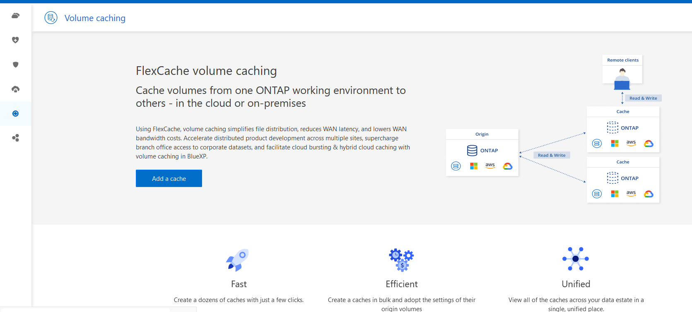
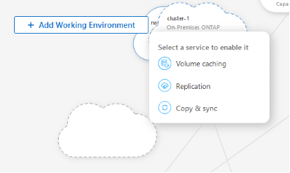
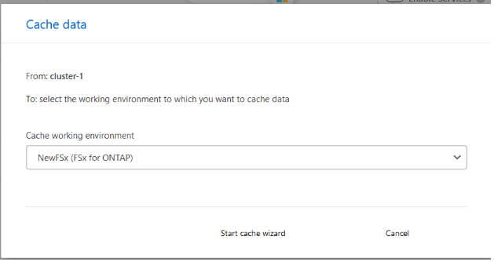
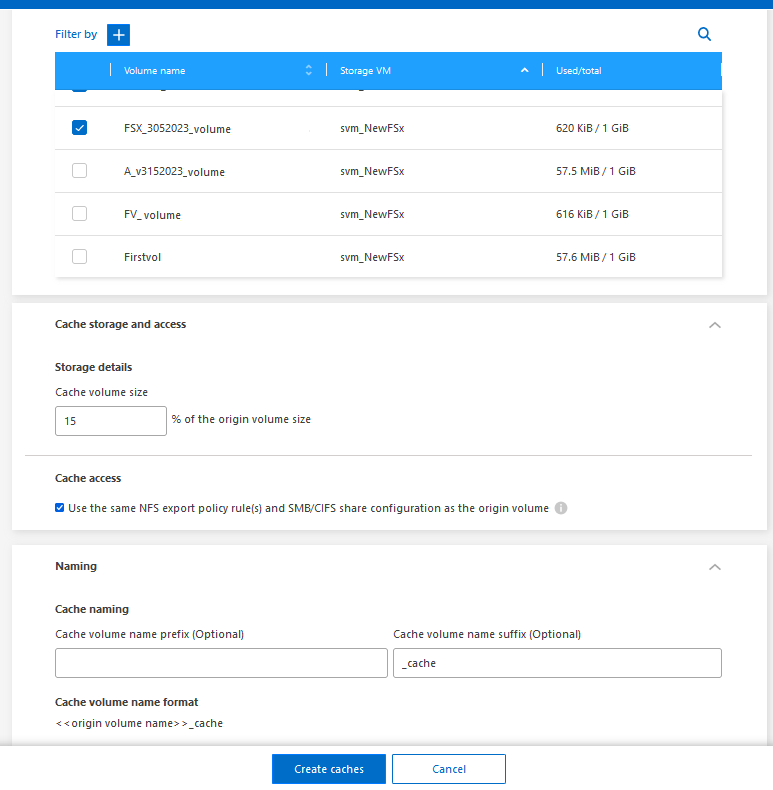

Request doc changes
Request doc changes Edit this page
Edit this page Learn how to contribute
Learn how to contributeCreate a cache
You can create a volume caching between Amazon FSx for ONTAP, Cloud Volumes ONTAP, and on-premises ONTAP with one or more source volumes from the source working environment as the cache source. You then choose the storage virtual machine for the cache volumes.
The cache volume can be on the same cluster or a different cluster than that of the source volume. The volumes you select to cache must belong to the same storage VM and the storage VMs must use the same protocols.

|
If volumes are not eligible for caching, they are greyed out so that you cannot select them. |
You can enter the size for cache volumes as a percentage of source volume size.

|
The IPSpace used by the cache volume depends on the IPSpace used by the source storage VM. |
The cache volume name uses a suffix of _cache added to the original volume name.
Steps from the BlueXP volume caching landing page
-
Log in to BlueXP and select Mobility > Volume caching from the left navigation.
You’ll land on the BlueXP volume caching Dashboard page. When you first start with the service, you need to add the cache information. Later, the Dashboard appears instead and displays data about the caches.
If you have not yet set up a BlueXP Connector, the option Add a connector appears instead of the Add a cache. In this case, you need to set up the Connector first. Refer to the BlueXP Quick start. 
-
Select Add a cache.
-
In the Cache data page, select the working environment source and target cache and select Start caching wizard.
-
In the Configure your caches page, select the volume or volumes you want to cache.
You can select up to 50 volumes. -
Scroll down the page to make additional changes to the VM details or volume size.
-
Enter the size for cache volumes as a percentage of the source volume size.
A good rule of thumb is that the cache volume size should be about 15% of the source volume size. -
Check the Cache access box to replicate the NFS export policy rules and the SMB/CIFS share configuration from the source volume to the target cache volume.
Then the NFS export policy rules and SMB/CIFS share in the source volume will be replicated to the cache volume. If the SMB/CIFS protocol isn’t enabled on the cache storage VM, the SMB/CIFS share will not replicate.
-
Optionally, enter the cache name prefix.
The suffix of _cache is appended to the name in the format: <user-specified prefix>_<source volume name>_cache
-
Select Create caches.
The new cache appears on the Caching list. The cache volume name will show
_cacheas a suffix to the source volume name. -
To see the progress of the operation, from the top menu, select > Timeline.
Steps from the BlueXP canvas
-
From the BlueXP canvas, select the working environment.
-
Select the source environment and drag it to the destination.

-
Select the Volume caching service.
This creates a cache volume from the source to the destination.
-
In the right pane, in the Caching service box, select Add.
-
In the Cache data page, select the working environment you want to cache and select Start cache wizard.

-
In the Configure your caches page, select the volume or volumes you want to cache.
You can select up to 50 volumes. -
Scroll down the page to make additional changes to the VM details or volume size.
-
Enter the size for cache volumes as a percentage of the source volume size.
A good rule of thumb is that the cache volume size should be about 15% of the source volume size. 
-
Check the Cache access box to replicate the NFS export policy rules and the SMB/CIFS share configuration from the source volume to the target cache volume.
Then the NFS export policy rules and SMB/CIFS share in the source volume will be replicated to the cache volume. If the SMB/CIFS protocol isn’t enabled on the cache storage VM, the SMB/CIFS share will not replicate.
-
Optionally, enter the cache name prefix.
The suffix of
_cacheis appended to the name in the format:<user-specified prefix>_<source volume name>_cache -
Select Create caches.
The new cache appears on the Caching list. The cache volume name will show
_cacheas a suffix to the source volume name. -
To see the progress of the operation, from the top menu, select > Timeline.